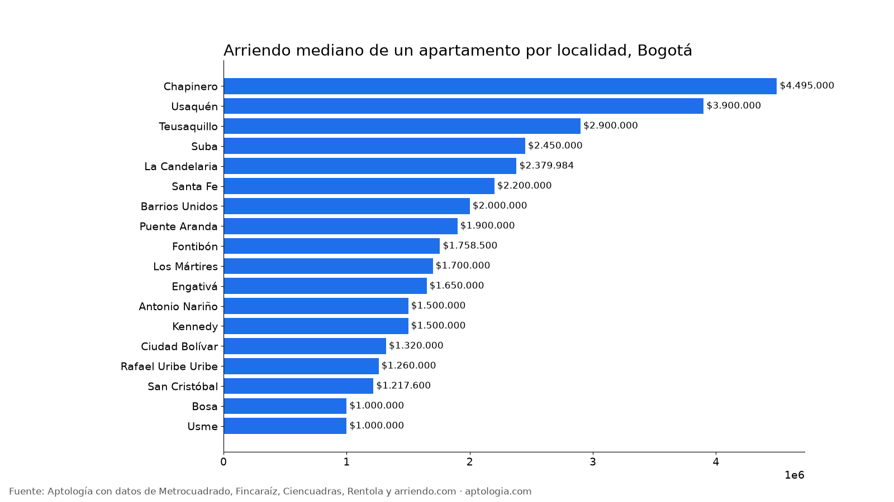
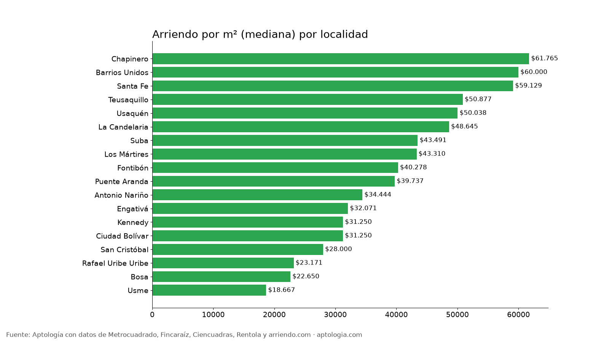

Arriendo en Bogotá por localidad: precio mediano, por m² y de 2 habitaciones (octubre 2026)
Estudio con datos abiertos (CC BY 4.0). Versión original: https://www.aptologia.com/estudios/arriendo-por-localidad-bogota · DOI: 10.5281/zenodo.23343314
El arriendo mediano de un apartamento en Bogotá va de $1.000.000 en Usme a $4.495.000 en Chapinero: 4,5 veces más. Un 2 habitaciones cuesta en la mediana $1.443.500 en Kennedy, $1.850.000 en Suba y $4.610.000 en Chapinero.
Resumen: comparamos 5.808 apartamentos en arriendo únicos con localidad identificada, en 18 localidades de Bogotá.
Actualizado: 13 de octubre de 2026 · Próxima actualización: mensual.

Arriendo por localidad
| Localidad | Canon mediano | 2 habitaciones | Por m² | Área mediana | Avisos |
|---|---|---|---|---|---|
| Chapinero | $4.495.000 | $4.610.000 | $61.765/m² | 70 m² | 952 |
| Usaquén | $3.900.000 | $3.389.250 | $50.038/m² | 76 m² | 1.757 |
| Teusaquillo | $2.900.000 | $3.100.000 | $50.877/m² | 55 m² | 307 |
| Suba | $2.450.000 | $1.850.000 | $43.491/m² | 57 m² | 846 |
| La Candelaria | $2.379.984 | $2.250.000 | $48.645/m² | 39 m² | 40 |
| Santa Fe | $2.200.000 | $2.700.000 | $59.129/m² | 39 m² | 305 |
| Barrios Unidos | $2.000.000 | $2.375.000 | $60.000/m² | 39 m² | 303 |
| Puente Aranda | $1.900.000 | $1.800.000 | $39.737/m² | 51 m² | 196 |
| Fontibón | $1.758.500 | $1.600.000 | $40.278/m² | 45 m² | 262 |
| Los Mártires | $1.700.000 | $1.598.620 | $43.310/m² | 39 m² | 115 |
| Engativá | $1.650.000 | $1.500.000 | $32.071/m² | 54 m² | 96 |
| Antonio Nariño | $1.500.000 | $1.490.000 | $34.444/m² | 50 m² | 57 |
| Kennedy | $1.500.000 | $1.443.500 | $31.250/m² | 50 m² | 287 |
| Ciudad Bolívar | $1.320.000 | $1.300.000 | $31.250/m² | 42 m² | 60 |
| Rafael Uribe Uribe | $1.260.000 | $1.110.000 | $23.171/m² | 54 m² | 53 |
| San Cristóbal | $1.217.600 | $1.217.600 | $28.000/m² | 45 m² | 35 |
| Bosa | $1.000.000 | $1.000.000 | $22.650/m² | 46 m² | 82 |
| Usme | $1.000.000 | $1.000.000 | $18.667/m² | 47 m² | 55 |

Cómo usarlo para decidir: compara por m² y no solo por canon. Las localidades del norte tienen apartamentos más grandes; el m² muestra cuánto pagas realmente por espacio.
Preguntas frecuentes
¿Cuál es la localidad más cara para arrendar en Bogotá? Chapinero, con un canon mediano de $4.495.000 al mes (952 avisos, corte al 13 de octubre de 2026).
¿Cuál es la localidad más barata para arrendar en Bogotá? Entre las localidades con al menos 20 avisos, Usme, con $1.000.000 al mes.
¿Cuánto cuesta arrendar un apartamento en Suba? La mediana es $2.450.000 al mes.
Metodología
- Fuente: base de ingesta diaria de Aptología, con avisos públicos de Metrocuadrado, Fincaraíz, Ciencuadras, Rentola y arriendo.com. Corte al 13 de octubre de 2026.
- Filtros: avisos vivos que pasan el control de calidad, en Bogotá, canon entre $400.000 y $30.000.000. Se excluyen TikTok y Facebook Marketplace.
- Duplicados: se deja un aviso por grupo de duplicados (el mismo inmueble en varios portales).
- Localidad: se normalizan los nombres a las 20 localidades oficiales; se descartan zonas genéricas ("Norte", "Occidental"). Solo localidades con 20 avisos o más.
- Limitaciones: son precios pedidos, no cerrados. Los barrios y localidades vienen tal como los escribe cada portal.
- Datos abiertos: datos.csv, licencia CC BY 4.0.
Cómo citar
Pinzón Pineda, D. M. (2026). Arriendo en Bogotá por localidad: precio mediano, por m² y de 2 habitaciones (octubre 2026). Aptología. https://www.aptologia.com/estudios/arriendo-por-localidad-bogota. Datos: datos.csv, licencia CC BY 4.0.